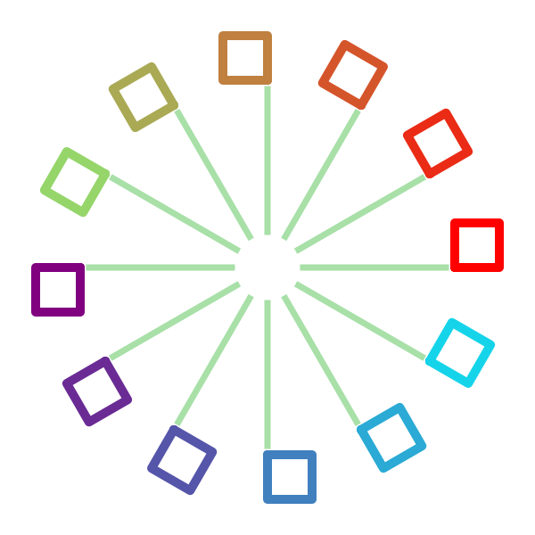

Kiva Drawing In-depth¶
Kiva State¶
Kiva is a “stateful” drawing API. What this means is that the graphics context has a collection of state which affects the results of its drawing actions. Furthermore, Kiva enables this state to be managed with a stack such that state can be “pushed” onto the stack before making some temporary changes and then “popped” off the stack to restore the state to a version which no longer includes those changes.
State Components¶
Here is a list of all the pieces of state tracked by a Kiva graphics context, along with the methods which operate on them:
Affine transformation:
translate_ctm(),rotate_ctm(),scale_ctm(),concat_ctm(),set_ctm(),get_ctm()Clipping:
clip_to_rect(),clip_to_rects(),clip(),even_odd_clip()Fill color:
set_fill_color(),get_fill_color(),linear_gradient(),radial_gradient()Stroke color:
set_stroke_color(),get_stroke_color()Line width:
set_line_width()Line join style:
set_line_join()Line cap style:
set_line_cap()Line dashing:
set_line_dash()Global transparency:
set_alpha(),get_alpha()Anti-aliasing:
set_antialias(),get_antialias()Miter limit:
set_miter_limit()Flatness:
set_flatness()Image interpolation:
set_image_interpolation(),get_image_interpolation())Text drawing mode:
set_text_drawing_mode()
Color¶
Kiva has two colors in its graphics state: stroke color and fill color. Stroke
color is used for the lines in paths when the drawing mode is STROKE,
FILL_STROKE or EOF_FILL_STROKE. Fill color is used for text and for
the enclosed sections of paths when the drawing mode is FILL, EOF_FILL,
FILL_STROKE, or EOF_FILL_STROKE. Additionally, the fill color can be
set by the linear_gradient() and
radial_gradient() methods where they are
available.
Note
Even though text uses the fill color, text will not be filled with a
gradient unless the text drawing mode is TEXT_FILL_STROKE and even that
will only work if the backend supports it.
Color values should always be passed in as 3- or 4- tuples. The order of the
color components is (R, G, B[, A]) and values must be floating point numbers
in the range [0, 1]. Even if a graphics context is not able to draw with alpha
blending, it’s still OK to pass a 4 component color value when setting state.
State Stack Management¶
Graphics context instances have two methods for saving and restoring the state,
save_state() (“push”) and
restore_state() (“pop”). For robust drawing
every “push” should be matched by a corresponding “pop” at some later point,
even if there is an error or other exception.
For this reason all graphics contexts are
context managers
and can use the with keyword to create a block of code where the graphics
state is temporarily modified: it is “pushed” at the start of the with
block and “popped” at the end. Using the context manager approach provides
safety from “temporary” modifications becoming permanent if an uncaught
exception is raised while drawing.
In Enable and Chaco, it is frequently the case that a graphics context instance will be passed into a method for the purpose of some drawing. Because it is not reasonable to push the responsibility of state management “up” the call stack, the onus is on the code making state modifications to do them safely so that other changes don’t leak into other code.
Note
Well-behaved code should take care to only modify graphics state inside a
with block.
Example¶
{kind=link}
First, the whole example:
1 2 3 4 5 6 7 8 9 10 11 12 13 14 15 16 17 18 19 20 21 22 23 24 25 26 27 28 29 30 31 32 33 | import math
from kiva import CAP_ROUND, CAP_SQUARE, JOIN_ROUND
from kiva.image import GraphicsContext
gc = GraphicsContext((600, 600))
gc.scale_ctm(2, 2)
gc.translate_ctm(150, 150)
gc.set_stroke_color((0.66, 0.88, 0.66))
gc.set_line_width(7.0)
gc.set_line_join(JOIN_ROUND)
gc.set_line_cap(CAP_SQUARE)
for i in range(0, 12):
theta = i*2*math.pi / 12.0
with gc:
gc.rotate_ctm(theta)
gc.translate_ctm(105, 0)
gc.set_stroke_color((1 - (i / 12), math.fmod(i / 6, 1), i / 12))
gc.set_line_width(10.0)
gc.set_line_cap(CAP_ROUND)
gc.rect(0, 0, 25, 25)
gc.stroke_path()
with gc:
gc.rotate_ctm(theta)
gc.translate_ctm(20, 0)
gc.move_to(0, 0)
gc.line_to(80, 0)
gc.stroke_path()
gc.save("state_ex.png")
|
The first part sets up the default graphics state. Here, that includes a scale of 2 in X and Y, a translation of (150, 150) which is affected by the preceeding scale transformation, and some line properties: stroke color, width, join, and cap:
7 8 9 10 11 12 13 | gc.scale_ctm(2, 2)
gc.translate_ctm(150, 150)
gc.set_stroke_color((0.66, 0.88, 0.66))
gc.set_line_width(7.0)
gc.set_line_join(JOIN_ROUND)
gc.set_line_cap(CAP_SQUARE)
|
Then in a loop, we draw twice (the two
stroke_path() calls). The first draw uses a
with block to temporarily modify the drawing state. It adds more affine
transformations: a rotate and a translate. It also changes some line
properties: stroke color, width, and cap. A rectangle is then added to the
current path and stroked.
17 18 19 20 21 22 23 24 | with gc:
gc.rotate_ctm(theta)
gc.translate_ctm(105, 0)
gc.set_stroke_color((1 - (i / 12), math.fmod(i / 6, 1), i / 12))
gc.set_line_width(10.0)
gc.set_line_cap(CAP_ROUND)
gc.rect(0, 0, 25, 25)
gc.stroke_path()
|
After leaving the first with block, the state is now restored to its
default. A new with block is entered and the current transformation matrix
is modified with the same rotation as the first drawing block, but a
different translation is applied. The line properties are unchanged
and so use the defaults set at the top.
26 27 28 29 30 31 | with gc:
gc.rotate_ctm(theta)
gc.translate_ctm(20, 0)
gc.move_to(0, 0)
gc.line_to(80, 0)
gc.stroke_path()
|
CompiledPath¶
A path is a collection of geometric objects that can be drawn in a graphics context with coloring and an affine transformation applied to it. It is the basic unit of drawing in a graphics context.
Every graphics context instance has a current path which can be manipulated by
the Path functions. However, some drawing operations are easier to
implement with an independent path instance
(specifically draw_path_at_points()).
An independent path instance can be created in two ways. The first is via the
get_empty_path() method. The second method
is to use the CompiledPath class imported from the backend being used.
The interface of a CompiledPath instance is the same as the
Path functions (modulo
get_empty_path()).
Once you have a path object, it can be drawn by adding it to the graphics
context with the add_path() method (which
adds the path to the current path) and then calling any of the
Drawing functions which operate on the current path.
For certain backends which support it, the
draw_path_at_points() method can be
used to draw a path object at many different positions with a single function
call.
Example¶

1 2 3 4 5 6 7 8 9 10 11 12 13 14 15 16 17 18 19 20 | from math import pi
from kiva.image import GraphicsContext
gc = GraphicsContext((600, 600))
path = gc.get_empty_path()
path.move_to(10, 40)
path.line_to(60, 40)
path.line_to(60, 90)
path.close_path()
gc.scale_ctm(2, 2)
gc.translate_ctm(150, 150)
for i in range(0, 12):
gc.rotate_ctm(2*pi / 12.0)
gc.set_fill_color((i / 12.0, 0.0, 1.0 - (i / 12.0)))
gc.add_path(path)
gc.fill_path()
gc.save("compiled_path_ex.png")
|
Kiva Image Rendering¶
Drawing images in kiva is accomplished via
draw_image(). A unique feature of drawing
images (relative to path drawing) is that you can apply an arbitrary
translation and scaling to the image without involving the current
transformation matrix.
The signature for draw_image() is straightforward:
-
abstract
AbstractGraphicsContext.draw_image(image, rect=None)[source] Render an image into a rectangle
- Parameters
image – An image. Can be a numpy array, a PIL
Imageinstance, or anotherGraphicsContextinstance.rect – A tuple (x, y, w, h). If not specified then the bounds of the the graphics context are used as the rectangle.
The image object that is passed to draw_image() can be a numpy
array, a PIL Image instance,
or another GraphicsContext instance of the same backend. If image is a
numpy array, it is typically converted to a more convenient format via
PIL.Image.fromarray.
Therefore, one must be careful about the expected pixel format of the image. If
your image is rendering with incorrect colors, this might be the problem.
Passing the other allowed versions of image should give a more consistent
result.
If image contains an alpha channel and transparent or translucent pixels,
this transparency should also be honored by the destination graphics context.
However, not all backends may support this.
Regarding the rect argument to draw_image(), if it is not
specified then the bounding rectangle of the graphics context will be used. As
mentioned before, rect can be used to apply an arbitrary translation and
scaling to an image. The translation is the x,y position of the rectangle and
the scaling is the ratio of the image’s width and height to those of the
rectangle. In every case, rect will be transformed by the current
transformation matrix.
Special Considerations¶
If you only want to draw a subset of an image, you should pass only that subset
to draw_image(). The Kiva API does not support defining a “source”
rectangle when drawing images, only a “destination”.
If drawing images with some scaling applied, one might wish to have control
over the interpolation used when drawing the image. This can be accomplished
with the set_image_interpolation() method.
Note
set_image_interpolation() is currently only implemented by the
kiva.agg backend. Other backends may have the method, but it is
effectively a no-op.
Saving images¶
One can also save the contents of a graphics context to an image. This is done
via the save() method. Different backends
support different output formats, and so in most cases you want to render to
the graphics context that best matches the output (eg. a raster format for
JPEG or PNG, or SVG, PDF and PS backends for the approriate vector formats).
-
abstract
AbstractGraphicsContext.save(filename, file_format=None, pil_options=None)[source] Save the graphics context to a file
Data is always saved in RGB or RGBA format, and converted to that format if not already in it.
If the
file_formatargument is None, then the file format is inferred from thefilenameextension, and so is not usually needed.The
pil_optionsargument is a dictionary of format-specific options that can be passed directly to PIL’s image file writers. For example, this can be used to control the compression level of JPEG or PNG output. Unrecognized options are silently ignored.
Kiva Text Rendering¶
Drawing text in kiva is accomplished via a few methods on
GraphicsContext. There are three basic topics: selecting a font,
measuring the size of rendered text, and drawing the text.
Font Selection¶
Font selection for use with the text rendering capabilities of
GraphicsContext can be accomplished in a few different ways depending
on the amount of control needed by your drawing code.
Simplest: select_font¶
The simplest form of font selection is the
select_font() method.
select_font(name, size=12)
name is the name of the desired font: “Helvetica Regular”,
“Futura Medium Italic”, etc.
size is the size in points.
Supported backends: cairo, celiagg, pdf, ps, qpainter, quartz, svg.
The KivaFont trait and set_font¶
If you’re already doing your drawing within an application using traits, you can
use the KivaFont trait.
KivaFont traits are initialized with
a string which describes the font: “Times Italic 18”, “Courier Bold 10”, etc.
The value of the trait is a Font instance which
can be passed to the set_font() method.
Supported backends: all backends
Font objects¶
If you don’t want to rely on the font description parsing in KivaFont, you
can also manually construct a Font instance. Once
you have a Font instance, it can be passed to the
set_font() method. Note that
Font is an expression of the desired font.
The actual font that is rendererd depends on the capabilities of the Kiva
backend, the operating system, and the fonts actually installed on the user’s
system.
Font(face_name="", size=12, family=SWISS, weight=WEIGHT_NORMAL, style=NORMAL)
face_name is the font’s name: “Arial”, “Webdings”, “Verdana”, etc.
size is the size in points
family is a constant from kiva.constants. Pick from DEFAULT,
SWISS, ROMAN, MODERN, DECORATIVE, SCRIPT, or TELETYPE.
If face_name is empty, the value of family will be used to select the
desired font.
weight is a weight constant from kiva.constants. Pick from
WEIGHT_NORMAL or WEIGHT_BOLD. Some backends support additional weights
WEIGHT_THIN, WEIGHT_EXTRALIGHT, WEIGHT_LIGHT, WEIGHT_MEDIUM,
WEIGHT_SEMIBOLD, WEIGHT_BOLD, WEIGHT_EXTRABOLD, WEIGHT_HEAVY,
WEIGHT_EXTRAHEAVY. Backends that only know about bold and normal weights
treat any weight of semi-bold or more as bold, and all others as normal weight.
style is a constant from kiva.constants. Pick from NORMAL or
ITALIC.
Supported backends: all backends
Resolving Fonts¶
In all of the above cases, Kiva attempts to find a good concrete font that matches the specification to do the drawing. However it is possible that the desired font is not available on the system where the code is running. In that case Kiva will fall back to a default font, and Kiva includes a basic font in case all else fails.
Different backends use different mechanisms for font resolution. For example the “qpainter” backend uses Qt’s font resolution system, while the SVG backend translates the font to an SVG font description and leaves it up to the viewer application to find an appropriate font.
However a number of backends do not have any built-in font support, and so in
those cases Kiva’s kiva.fonttools module is used to find system font
files which match the requirements. Application developers who wish to ship
particular fonts as resources with their application can add these to the
fonttools management system via the
add_application_fonts() function (see
Adding Custom Fonts for more details).
Further details are available in the Kiva Font Management section.
Measuring Text¶
Before drawing text, one often wants to know what the bounding rectangle of the
rendered text will be so that the text can be positioned correctly. To do this,
the GraphicsContext.get_text_extent() method is used.
get_text_extent(text) -> (x, y, width, height)
text is the string that you want to measure. The currently selected font
will be used, so it’s important to set the font before calling this method.
The return value is a tuple which describes a rectangle with its bottom-left
corner at (x, y) and a width and height. The rectangle is relative to the
origin and not affected by the currently set text transform. The bottom of the
rectangle won’t always be 0, depending on the font. It might be a negative
number in the situation where glyphs hang below the baseline. In any case,
y = 0 is the baseline for the rendered glyphs.
Note
get_text_extent does not respect endline characters. It is assumed that
text describes a single line of text. To render multiple lines, one
should split the text into individual lines first and then measure and draw
each line in sequence. A blank line’s height should be the same as the
height of the selected font.
Drawing Text¶
Text can be drawn in a graphics context with the
GraphicsContext.show_text() and
GraphicsContext.show_text_at_point() methods.
show_text(text, point=None)
show_text_at_point(text, x, y)
show_text_at_point or show_text with a point=(x, y) argument both
do the same thing: Draw a line of text at the given (x, y) coordinate, which
represents the horizontal position of the first glyph and the baseline position,
respectively.
If show_text is used without a point argument, then the current text
position of the graphics context is used. This position can be set via the
GraphicsContext.set_text_position() method. Relatedly, the text
position can be retrieved with the GraphicsContext.get_text_position()
method.
Note
There is also a GraphicsContext.set_text_matrix() method which
allows a text-specific affine transform to be set. Unfortunately it’s not
implemented uniformly across backends, so it’s recommended not to use it.

Table of Contents
Previous topic
Next topic
Kiva Interface Quick Reference